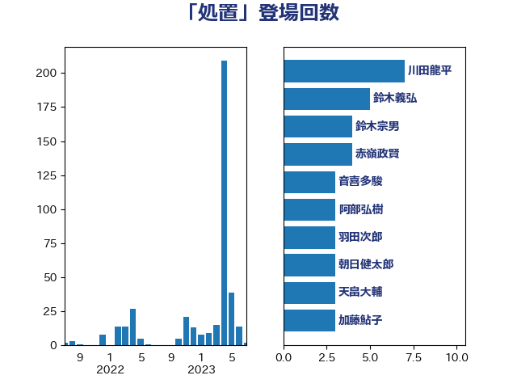

単語「処置」

| 川田龍平 | 立憲民主党 | 7 回 |
| 鈴木義弘 | 国民民主党 | 5 回 |
| 鈴木宗男 | 日本維新の会 | 4 回 |
| 赤嶺政賢 | 日本共産党 | 4 回 |
| 音喜多駿 | 日本維新の会 | 3 回 |
| 阿部弘樹 | 日本維新の会 | 3 回 |
| 羽田次郎 | 立憲民主党 | 3 回 |
| 朝日健太郎 | 自由民主党 | 3 回 |
| 天畠大輔 | れいわ新選組 | 3 回 |
| 加藤鮎子 | 自由民主党 | 3 回 |
| 野村哲郎 | 自由民主党 | 2 回 |
| 西村智奈美 | 立憲民主党 | 2 回 |
| 藤巻健太 | 日本維新の会 | 2 回 |
| 若松謙維 | 公明党 | 2 回 |
| 芳賀道也 | 国民民主党 | 2 回 |
| 穀田恵二 | 日本共産党 | 2 回 |
| 玉木雄一郎 | 国民民主党 | 2 回 |
| 熊谷裕人 | 立憲民主党 | 2 回 |
| 江島潔 | 自由民主党 | 2 回 |
| 松本尚 | 自由民主党 | 2 回 |
| 岬麻紀 | 日本維新の会 | 2 回 |
| 尾崎正直 | 自由民主党 | 2 回 |
| 古川俊治 | 自由民主党 | 2 回 |
| 加藤勝信 | 自由民主党 | 2 回 |
| 佐々木紀 | 自由民主党 | 2 回 |
| 伊藤孝恵 | 国民民主党 | 2 回 |
| 伊佐進一 | 公明党 | 2 回 |
| 仁比聡平 | 日本共産党 | 2 回 |
| 仁木博文 | 無所属 | 2 回 |
| 鬼木誠 | 立憲民主党 | 1 回 |
| 高橋克法 | 自由民主党 | 1 回 |
| 高橋光男 | 公明党 | 1 回 |
| 高木真理 | 立憲民主党 | 1 回 |
| 馬場成志 | 自由民主党 | 1 回 |
| 須藤元気 | 無所属 | 1 回 |
| 青木愛 | 立憲民主党 | 1 回 |
| 長浜博行 | 無所属 | 1 回 |
| 長友慎治 | 国民民主党 | 1 回 |
| 鈴木庸介 | 立憲民主党 | 1 回 |
| 鈴木俊一 | 自由民主党 | 1 回 |
| 野間健 | 立憲民主党 | 1 回 |
| 谷川とむ | 自由民主党 | 1 回 |
| 藤木眞也 | 自由民主党 | 1 回 |
| 舩後靖彦 | れいわ新選組 | 1 回 |
| 羽生田俊 | 自由民主党 | 1 回 |
| 米山隆一 | 立憲民主党 | 1 回 |
| 竹谷とし子 | 公明党 | 1 回 |
| 秋野公造 | 公明党 | 1 回 |
| 福島みずほ | 社会民主党 | 1 回 |
| 神谷宗幣 | 参政党 | 1 回 |
| 石田昌宏 | 自由民主党 | 1 回 |
| 石川大我 | 立憲民主党 | 1 回 |
| 畦元将吾 | 自由民主党 | 1 回 |
| 田村まみ | 国民民主党 | 1 回 |
| 田中健 | 国民民主党 | 1 回 |
| 牧山ひろえ | 立憲民主党 | 1 回 |
| 滝沢求 | 自由民主党 | 1 回 |
| 清水貴之 | 日本維新の会 | 1 回 |
| 浜田靖一 | 自由民主党 | 1 回 |
| 浜田聡 | NHK党 | 1 回 |
| 浜口誠 | 国民民主党 | 1 回 |
| 池畑浩太朗 | 日本維新の会 | 1 回 |
| 横山信一 | 公明党 | 1 回 |
| 森田俊和 | 立憲民主党 | 1 回 |
| 杉尾秀哉 | 立憲民主党 | 1 回 |
| 本田顕子 | 自由民主党 | 1 回 |
| 本村伸子 | 日本共産党 | 1 回 |
| 日下正喜 | 公明党 | 1 回 |
| 新垣邦男 | 立憲民主党 | 1 回 |
| 打越さく良 | 立憲民主党 | 1 回 |
| 後藤祐一 | 立憲民主党 | 1 回 |
| 庄子賢一 | 公明党 | 1 回 |
| 川合孝典 | 国民民主党 | 1 回 |
| 岸田文雄 | 自由民主党 | 1 回 |
| 岡田直樹 | 自由民主党 | 1 回 |
| 山添拓 | 日本共産党 | 1 回 |
| 山本香苗 | 公明党 | 1 回 |
| 山本順三 | 自由民主党 | 1 回 |
| 山口壯 | 自由民主党 | 1 回 |
| 山井和則 | 立憲民主党 | 1 回 |
| 宮崎勝 | 公明党 | 1 回 |
| 室井邦彦 | 日本維新の会 | 1 回 |
| 安江伸夫 | 公明党 | 1 回 |
| 大塚耕平 | 国民民主党 | 1 回 |
| 塩田博昭 | 公明党 | 1 回 |
| 堤かなめ | 立憲民主党 | 1 回 |
| 堀場幸子 | 日本維新の会 | 1 回 |
| 堀内詔子 | 自由民主党 | 1 回 |
| 城井崇 | 立憲民主党 | 1 回 |
| 和田政宗 | 自由民主党 | 1 回 |
| 吉田統彦 | 立憲民主党 | 1 回 |
| 吉田久美子 | 公明党 | 1 回 |
| 古賀友一郎 | 自由民主党 | 1 回 |
| 古賀千景 | 立憲民主党 | 1 回 |
| 勝部賢志 | 立憲民主党 | 1 回 |
| 中谷真一 | 自由民主党 | 1 回 |
| 中川貴元 | 自由民主党 | 1 回 |
| 中島克仁 | 立憲民主党 | 1 回 |
| 中司宏 | 日本維新の会 | 1 回 |
| 三浦信祐 | 公明党 | 1 回 |